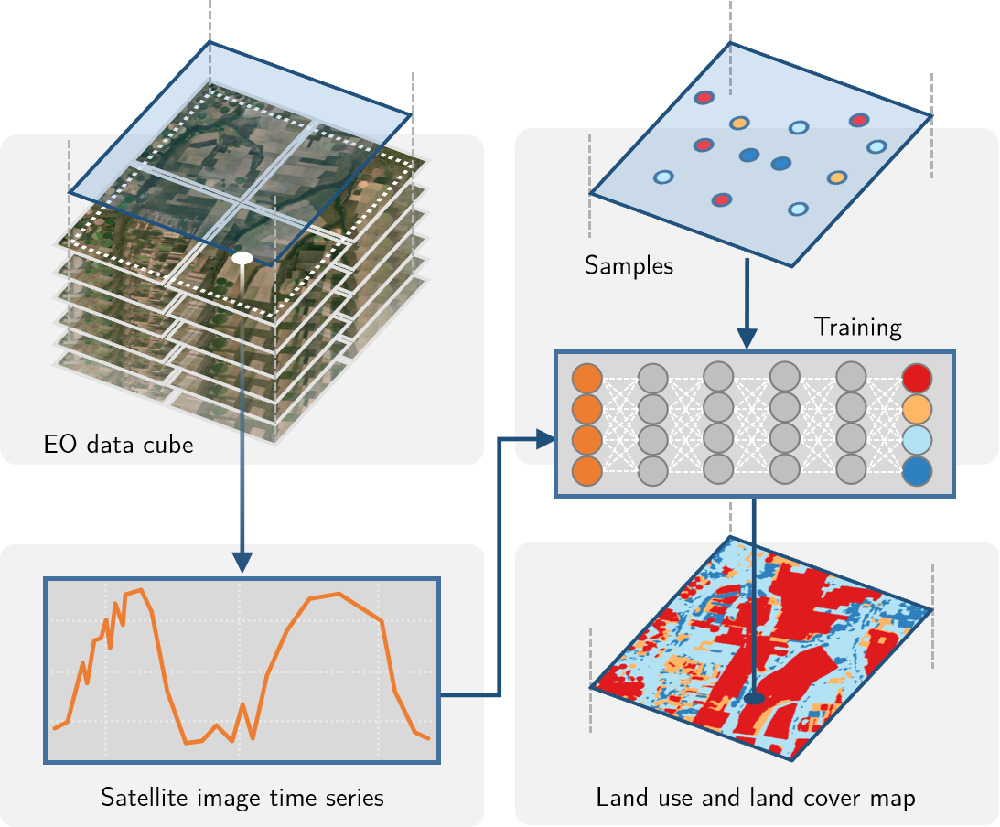

Chapter 1 Introduction to SITS

How sits works
The package adopts a time-first, space-later approach. Each spatial location is associated to a time series. Locations with known labels train a machine learning classifier, which classifies each time series of a data cube, as shown in Figure 1.

Figure 1.1: Using time series for land classification (source: authors)
The package provides a set of tools for analysis, visualization and classification of satellite image time series. Users follow a typical workflow:
- Select an analysis-ready data image collection on cloud providers such as AWS, Microsoft Planetary Computer, Digital Earth Africa and Brazil Data Cube.
- Build a regular data cube using the chosen image collection.
- Obtain new bands and indices with operations on data cubes.
- Extract time series samples from the data cube to be used as training data.
- Perform quality control and filtering on the time series samples.
- Train a machine learning model using the extracted samples.
- Use the model to classify the data cube and get class probabilities for each pixel.
- Post-process the probability cube to remove outliers.
- Produce a labeled map from the post-processed probability cube.
- Evaluate the accuracy of the classification using best practices.
Each step of workflow corresponds to a function of the sits API, as shown in the table and figure below. These functions have convenient default parameters and behavior. A single function builds machine learning models ranging from random forests to neural networks. Functions that process big data cubes implement efficient processing internally. Thus, users can achieve good results without in-depth knowledge about machine learning and parallel processing.
| API_function | Inputs | Output |
|---|---|---|
| sits_cube() | ARD image collection | Irregular data cube |
| sits_regularize() | Irregular data cube | Regular data cube |
| sits_apply() | Regular data cube | Regular data cube |
| with new bands and indices | ||
| sits_get_data() | Data cube and sample locations | Time series |
| sits_som() | Time series | Improved time series samples |
| sits_train() | Time series and ML algorithm | ML classification model |
| sits_classify() | ML classification model | Probability cube |
| and regular data cube | ||
| sits_smooth() | Probability cube | Post-processed probs cube |
| sits_label_classification() | Post-processed probs cube | Classified map |
| sits_accuracy() | Classified map and validation samples | Accuracy assessment |

Figure 1.2: Main functions of the SITS API
Creating a Data Cube
The first step in using sits is creating a regular data cube, which is a set of image files covering a chosen area, where each image has the same spectral bands and spatial resolution, and the temporal resolutions is a set of adjacent and regular intervals.
In this example, the data cube is composed of a set of MODIS MOD13Q1 images (collection 6) for the Sinop region of the State of Mato Grosso, Brazil. All images have the bands “NDVI” and “EVI”, covering a one-year period from 2013-09-14. (We use the convention “year-month-day” for dates). There are 23 time instances, each covering a 16-day period, which is the standard for the MOD13Q1 product[1]. The data is available in the R package sitsdata, which contains data for the examples in this book. The code below shows how to create data cubes from local files. The data has been obtained from the Brazil Data Cube (BDC) repository and downloaded to be included in the sitsdata package. To work directly with data cubes in repositories such as AWS, MS/Planetary Computer and the Brazil Data Cube, please see the “Earth observation data cubes” chapter.
In the example, the images are stored in the user’s local machine. To build a data cubes from local files, users need to provide information about the original source from with the data was downloaded. Such information is required because local raster image files are usually stored in GeoTIFF format, which does not contain important information such as band names, maximum/minimum values, and cloud pixels. Thus, when sits accesses local data, it needs to know the following information:
source- cloud provider from where the data has been downloaded. In the example below, data has been obtained from the Brazil Data Cube (“BDC”).collection- image collection from where the images have been extracted. In this case, data has been retrieved forMOD13Q1-6, which is the MOD13Q1 collection 6 stored in the BDC.data_dir- local directory where the files are stored.parse_info- description of the local file names, so thatsitscan identify tile, band and date information. In this case, local MOD13Q1 images have names of the typeTERRA_MODIS_012010_EVI_2014-07-28.tif. In this case, the file is parsed asX1_X2_tile_band_date.
data_dir <- system.file("extdata/sinop", package = "sitsdata")
# create a raster metadata file based on the information about the files
sinop_cube <- sits_cube(
source = "BDC",
collection = "MOD13Q1-6",
data_dir = data_dir,
parse_info = c("X1", "X2", "tile", "band", "date")
)
# plot a color composite for the first date (2013-09-14)
plot(sinop_cube,
red = "EVI", green = "NDVI", blue = "EVI",
date = "2013-09-14")
Figure 1.3: Color composite image for 2013-09-14
The sits_cube() function defines a data cube, which is an organized collection of images covering a geographical area in a given time interval. Data cubes can be conceived as a 3D array of pixels, where each pixel is associated to a time series. All pixels share the same timeline and the same set of attributes (usually spectral bands). When a data cube is defined, the values of the images are not loaded in memory. The output of sits_cube() is a table which contains the metadata that describes the actual image data.
The time series table
To handle time series information, sits uses a tabular data structure. The example below shows a table with 1,218 time series obtained from MODIS MOD13Q1 images. Each series has four attributes: two bands (“NIR” and “MIR”) and two indexes (“NDVI” and “EVI”). This data set is available in package sitsdata.
# load the MODIS samples for Mato Grosso from the "sitsdata" package
library(sitsdata)
data("samples_matogrosso_mod13q1", package = "sitsdata")
samples_matogrosso_mod13q1[1:3,]#> # A tibble: 3 × 7
#> longitude latitude start_date end_date label cube time_series
#> <dbl> <dbl> <date> <date> <chr> <chr> <list>
#> 1 -57.8 -9.76 2006-09-14 2007-08-29 Pasture bdc_cube <tibble [23 × 5]>
#> 2 -59.4 -9.31 2014-09-14 2015-08-29 Pasture bdc_cube <tibble [23 × 5]>
#> 3 -59.4 -9.31 2013-09-14 2014-08-29 Pasture bdc_cube <tibble [23 × 5]>The data structure associated to the time series is a table that contains data and metadata. The first six columns contain the metadata: spatial and temporal information, the label assigned to the sample, and the data cube from where the data has been extracted. The time_series column contains the time series data for each spatiotemporal location. This data is also organized as a table, with a column with the dates and the other columns with the values for each spectral band. For more details on how to handle time series data, please see the “Working with Time Series” chapter.
It is useful to plot the dispersion of the time series. In what follows, for brevity we will select only one label (“Forest”) and one index (“NDVI”). The resulting plot shows all of the time series associated to the label and attribute, highlighting the median and the first and third quartiles.
samples_forest <- dplyr::filter(
samples_matogrosso_mod13q1,
label == "Forest"
)
samples_forest_ndvi <- sits_select(
samples_forest,
band = "NDVI"
)
plot(samples_forest_ndvi)
Training a machine learning model
After obtaining the time series, the next step is to select a suitable subset to use as training samples for a machine learning model. In this case, the time series data has four attributes (“EVI”, “NDVI”, “NIR”, “MIR”) and the data cube is composed only with data from the “NDVI” and “EVI” indexes. We extract the “NDVI” and “EVI” indexes from the time series data set and use the resulting data for training a model. To build the classification model, we use a random forest model called by the sits_rfor() function. For more details, please see the “Machine Learning for Data Cubes” chapter.
# select the bands "ndvi", "evi"
samples_2bands <- sits_select(
data = samples_matogrosso_mod13q1,
bands = c("NDVI", "EVI"))
# train a random forest model
rfor_model <- sits_train(
samples = samples_2bands,
ml_method = sits_rfor()
)Data cube classification
The next step is to classify the data cube. Classification produces a set of probability maps, one for each class. For each map, the value of a pixel is proportional to the the probability that it belongs to the class. To visualize the result, we plot the probability maps. In the example below, we show the maps of two classes (“Forest” and “Pasture”). Details of the classification process are available in “Classification of Images in Data Cubes”.
# classify the raster image
sinop_probs <- sits_classify(
data = sinop_cube,
ml_model = rfor_model,
multicores = 2,
memsize = 8,
output_dir = "./tempdir/chp3"
)
plot(sinop_probs, labels = c("Forest", "Pasture"))
Figure 1.4: Probability map for classes of each pixel
In the example above, as well as others in this book, we have chosen to write output files to the local directory “./tempdir”. Users are welcome to chose any other directory.
Spatial smoothing
When working with big EO data sets, there is a considerable degree of data variability in each class. As a result, some pixels will be misclassified. These errors are more likely to occur in transition areas between classes or when dealing with mixed pixels. To offset these problems, sits includes a post-processing smoothing method based on Bayesian probability. The sits_smooth() function uses information from a pixel’s neighborhood to reduce uncertainty about its label, which is illustrated below. After smoothing, we plot the probability maps for classes “Forest” and “Pasture” to compare with the previous plot. For more discussion on post-processing and smoothing methods, please see Chapter 7.
# perform spatial smoothing
sinop_smooth <- sits_smooth(
cube = sinop_probs,
multicores = 2,
memsize = 8,
output_dir = "./tempdir/chp3"
)
plot(sinop_smooth, labels = c("Forest", "Pasture"))
Figure 1.5: Smoothed probability maps
Labelling a probability data cube
After removing outliers using local smoothing, one can obtain the labeled classification map using the function sits_label_classification(). This function assigns each pixel to the class with highest probability.
# label the probability file
# (by default selecting the class with higher probability)
sinop_label <- sits_label_classification(
cube = sinop_smooth,
output_dir = "./tempdir/chp3"
)
plot(sinop_label, title = "Sinop-label")
Figure 1.6: Labeled classification map
The resulting classification files can be read by QGIS. Links to the associated files are available in the sinop_label table in the column file_info.
# show the location of the classification file
sinop_label$file_info[[1]]#> # A tibble: 1 × 12
#> band start_date end_date xmin ymin xmax ymax xres yres nrows
#> <chr> <date> <date> <dbl> <dbl> <dbl> <dbl> <dbl> <dbl> <dbl>
#> 1 class 2013-09-14 2014-08-29 -6.18e6 -1.35e6 -5.96e6 -1.23e6 232. 232. 551
#> # … with 2 more variables: ncols <dbl>, path <chr>Final remarks
The sits package provides an API to build EO data cubes from image collections available in cloud services, and to perform land classification of data cubes using machine learning. The classification models are built based on satellite image time series extracted from the cubes. The package provides additional function for sample quality control, post-processing and validation. The design of the API tries to reduce complexity for users and hide details such as how to do parallel processing, and to handle data cubes composed by tiles of different timelines.